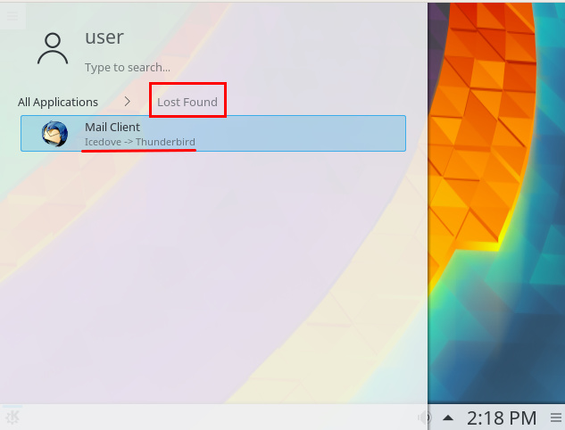
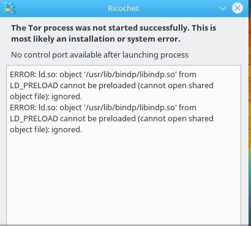
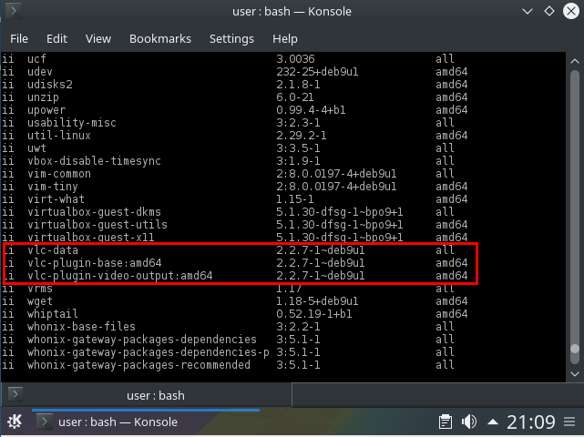
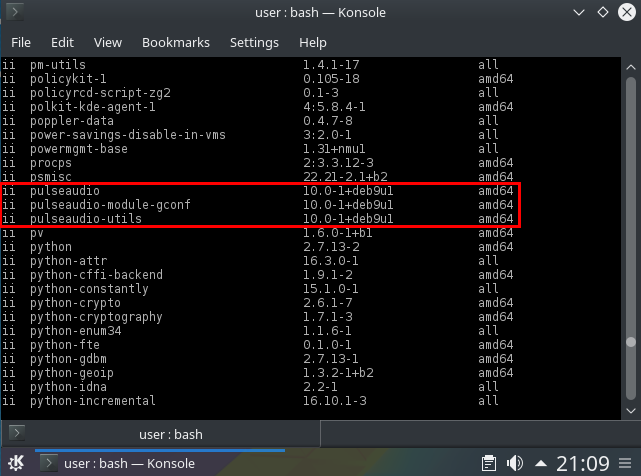

Just finished build and upload. Entirely untested for now.
Testers wanted!

Just finished build and upload. Entirely untested for now.
Testers wanted!
This test based on Whonix inside Vbox, non-qubes.
things better to change:-
(same as gw)
https://github.com/Whonix/anon-meta-packages/commit/a22b1807c79cb1d21447c83ed251c331cf6222f1
Whonix 14 / Qubes 3.2 Testing Thread
Not available in Debian stretch. Only https://packages.debian.org/stretch/tor-arm is.
Difficult. Please create a ticket for that.
No?
What’s wrong about these?
No way to solve. Debian isuse. Debian dpkg lacks “weak dependencies” feature.
https://www.whonix.org/wiki/Whonix_Debian_Packages
Difficult. Please open a ticket.
Icedove? Where?
torbrowser-launcher would be good but there is too much Whonix integration work left to do.
https://forums.whonix.org/t/using-torbrowser-launcher-instead-of-tb-updater-in-whonix
https://github.com/micahflee/torbrowser-launcher/issues/created_by/adrelanos
Please open a ticket for that.
Ricochet (as well as onionshare / ZeroNet) unfortunately needs some manual steps by the user before these work.
https://www.whonix.org/wiki/Next#ricochet
https://www.whonix.org/wiki/Next#onionshare
https://www.whonix.org/wiki/Next#ZeroNet
Please test if that works for you.
https://phabricator.whonix.org/T733
https://phabricator.whonix.org/T734
https://phabricator.whonix.org/T735

the path /usr/share/tor-controlport-filter-merger/examples/40_ricochet.yml doesnt exist in gw
additional tickets:-
Desktop Session Login better to start it with empty session
https://phabricator.whonix.org/T737
Change default application to not use kmail
https://phabricator.whonix.org/T738
It was because tor-controlport-filter was replaced by / renamed to onion-grater. Documentation has been fixed by me just now. Please kindly try again.
Why?
By the way, for Non-Qubes-Whonix 14 (or above) only you might be interested to install the grub-live package was developed by @Algernon. (Package reviewed, and package uploaded by me.) It adds a live entry to grub boot menu. Then nothing is persisted. Still no claims about anti forensics.
Development discussion:
https://phabricator.whonix.org/T714
Keep a copy of
/boot/grub/grub.cfg
Should be smooth but there is a small chance to breaks booting.
Install package.
sudo apt-get install grub-liveyep it works as what u have mentioned from steps , but it didnot make ricochet to work

to avoid loop back information, which may contain malicious session (theoretically)
which repo tester or developer ?


what do u think about adding w3m text-based browser for non-graphical users ?
i found this code as well on torifying w3m here
Will fix one bug (ERROR: ld.so) after the next upgrade which was just now uploaded by me. Then please try again.
Malicious session? How could that happen? When malware is on the system, it does not need to abuse session management. More likely to hide as kernel rootkit.
developers repository will be closed btw. will beomce stretch-developers. Please move to stretch repository.
sudo whonix_repository --enable --codename stretch
That’s difficult to get rid off. dolphin depends on it. See: apt-cache show dolphin. It’s a waste of space, mostly, and would be good to purge, but I don’t think it increases attack surface. A program on the gateway even if running does not increase attack surface. Malware would still need a way to interact with that code to exploit it. What’s the attack vector? A user downloading a malicious audio file, playing it on the gateway and then the audio file exploits a hypothetical vulnerability in phonon?
Torification is not all. https://www.whonix.org/wiki/Tor_Browser#Anonymity_vs_Pseudonymity applies. It needs an educated review wrt protocol level leaks. If that were okay, then of course, alternative browsers, any with less attack surface that is anonymous would of course be welcome.
@All Whonix 14 testers: Please move to stretch repository.
sudo whonix_repository --enable --codename stretch
(The developers repository has been renamed and therefore abandoned, it is now the stretch-developers repository.)
sudo apt-get dist-ugprade will among other packages install a new package, whonix-firewall.
Make sure to run.
sudo apt-get autoremove
After sudo apt-get dist-upgrade. It will remove whonix-gw-firewall / whonix-ws-firewall packages because it got merged into a single package whonix-friewall.
Other repositories but not really in use yet. Will be later when Whonix 14 gets released and blessed stabe.
sudo whonix_repository --enable --codename stretch-proposed-updates
sudo whonix_repository --enable --codename stretch-testers
sudo whonix_repository --enable --codename stretch-developerspreferable to give it for the user choice , but from our side it will be empty.
done , but just mention anywhere when grup-live to be available there so i can install it (i rather stick to tester repo better than dev repo).
cant we remove even dolphin and reinstall it again ? so we can get ride of all of them ? to avoid sucha exploitation like this one PulseAudio 0.9.5 - ‘Assert()’ Remote Denial of Service or this one PulseAudio setuid Local Privilege Escalation Vulnerability or VideoLAN VLC Media Player 0.8.6d - ‘httpd_FileCallBack’ Remote Format String. they r old used exploitation but still it increase the attack surface. (specially gateway very likely to hold hidden services inside it).
Note:- it will cause the connection to drop in the gw , restart will solve the issue.
if we can fix this issue here , its preferable to change the links inside whonix homepage to .onions only (for the website , documentation, forum …etc).
This was discussed previously…
https://forums.whonix.org/t/convention-for-linking-to-sites-with-onion-addresses/4462/2
i think we r not on the same discussion , because he was speaking generally , im speaking specifically to the links which r included inside TBB-whonix homepage. but not changing the entire website to be just onion.
close audio from outside gw check the screenshot
TNT BOM BOM:
done , but just mention anywhere when grup-live to be available there so i can install it (i rather stick to tester repo better than dev repo).
You could use stretch-testers.
sudo whonix_repository --enable --codename stretch-testers
It’s currently the same as stretch but anyhow.
Then just sudo apt-get install grub-live. Should be available there.
cant we remove even dolphin and reinstall it again ? so we can get ride of all of them ?
It’s like throwing out whole KDE.
to avoid sucha exploitation like this one PulseAudio 0.9.5 - ‘Assert()’ Remote Denial of Service
This wouldn’t have applied to Whonix, because there is no way for the
attacking UDP package to interact with pulseaudio. For comparison: even
Qubes OS has audio in dom0, @marmarek wasn’t concerned about it.
or this one PulseAudio setuid Local Privilege Escalation Vulnerability
Local Privilege Escalation means the attacker already compromised a
non-root account and then uses Local Privilege Escalation to compromise
the root account. After non-root account compromising, it’s game over
anyhow.
or VideoLAN VLC Media Player 0.8.6d - ‘httpd_FileCallBack’ Remote Format String.
This required the user to interact with an attacker supplied media. As
long as the user doesn’t start VLC on Whonix-Gateway (it’s not even
startable), this issue even if not fixed by now could not do any harm.
they r old used exploitation but still it increase the attack surface. (specially gateway very likely to hold hidden services inside it).
None of them would have applied to Whonix-Gateway.
Note:- it will cause the connection to drop in the gw , restart will solve the issue.
Good to know.
- additional features:-
if we can fix this issue here
Tor Browser broke it. Only Tor Browser can fix it.
https://trac.torproject.org/projects/tor/ticket/24136
its preferable to change the links inside whonix homepage to .onions only (for the website , documentation, forum …etc).
Wasn’t this done?
https://github.com/irykoon/whonix-welcome-page/commit/4092878c04e8b1fd5994222cbd9f3b2b5edb9732
If you mean the website, best can be done is manually by the user as per:
We cannot make it the default from the server, otherwise we would break
onion connections. It would be great if we could supply onion links only
when someone visits the Whonix onion url, but the web apps we are using
don’t support this.
Hey everyone, just downloaded both of these ova files and to first order everything worked good. Both the Gateway and Workstation loaded. I got a Tor connection and passed the Tor check. Etc…
A few questions/things I noticed:
In addition to the mixture of http and onion sources in the sources.list as mentioned above, also I noticed that there is a mixture of sources from Debian Stretch and Debian Jessie. Here is a screenshot: https://imgur.com/a/iAczx
For some reason there is a time mismatch picked up by check2ip.com. See screenshot: https://imgur.com/a/NrZ6A
I tried to run swdate-gui which would never actually launch: https://imgur.com/a/FOnlX
So then I ran swdate alone which seemed to work but check2ip.com still gives a time mismatch.
Every dns leak test gave a different ip address. All of them seemed like Tor nodes which was nice (none were my actual ip), but is this a problem they they don’t all agree?
Is it possible to pre-install a decent password generator like Keepass? Is it possible to have full disk encryption with a changeable password? Is it possible to do something like “apt-get whonix-suite” if you wanted to get all of these nice things using a custom setup? Such as a Gnome instance of Debian.
Again, to first order this release looks great. I will keep testing but I wanted to say thanks for all the hard work.
Confirmed. This will be fixed in next release / after upgrades.
Please see:
https://www.whonix.org/wiki/Install_Software#GUI_Applications_with_Root_Rights
also https://www.whonix.org/wiki/Browser_Tests
https://www.whonix.org/wiki/Dev/Password_Manager
https://forums.whonix.org/t/add-password-manager-by-default
Please see https://www.whonix.org/wiki/Advanced_Security_Guide#Encrypted_Guest_Images
Please see:
Updated instructions (puring control-port-filter-python on Whonix-Gateway).
sudo apt-get purge iceweasel firefox-esr exim* unattended-upgrades cups anon-shared-kde-accessibility control-port-filter-pythonNon-Qubes-Whonix 14.0.0.5.7 testers-only being uploaded.
https://download.whonix.org/linux/14.0.0.5.7/
Closed since new testers wanted thread posted.
{kind=link}